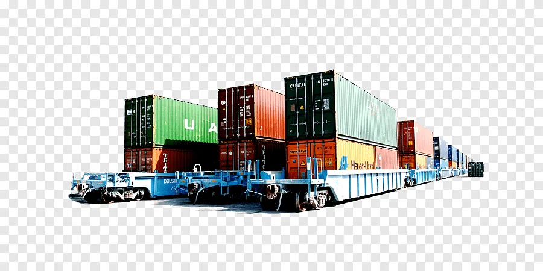

Better yard & gate visibility
Vehicles · gates · docks · cargo all on one canvas.
Container terminals, distribution centers, airports, yards, warehouses, logistics hubs — cargo, vehicles, gates, yards, docks and workflows on one operational canvas. INNFINI connects RFID · GPS · ANPR · WMS · ERP · sensors · mobile teams · geospatial reports into one intelligent control layer.
See vehicles, queues, gate exceptions and dock status in one map view — with ANPR + RFID feeding the event stream live.

INNFINI tracks pallets, containers, crates, vehicles, equipment, high-value assets and yard tools across gates, docks, yards, warehouses and staging areas — and reconciles every movement with WMS / TMS / ERP.
INNFINI surfaces dwell-time clusters, dock bottlenecks and staging delays — so operations can re-route, re-stage or escalate before throughput collapses.
RFID without WMS tx · container in wrong zone · vehicle without appointment · dock delay · missing scan — exceptions auto-flagged with the right action attached.
INNFINI sits between gate & yard hardware and your enterprise records — bi-directional sync with ERP, WMS, TMS, customs and field mobile.
Vehicles · gates · docks · cargo all on one canvas.
Heatmaps + flow lines surface bottlenecks early.
Auto-flag · auto-correct · operator approves.
Every movement linked to WMS / TMS / ERP.
RFID + scan + sensor reconciliation is automatic.
Field, gate, yard and enterprise records in sync.
A walkthrough with our solutions team — your systems, your sites, your workflows.